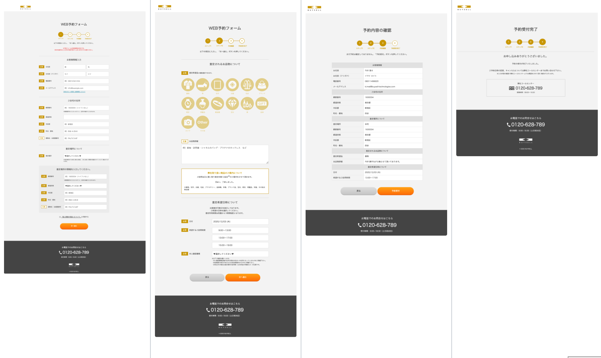
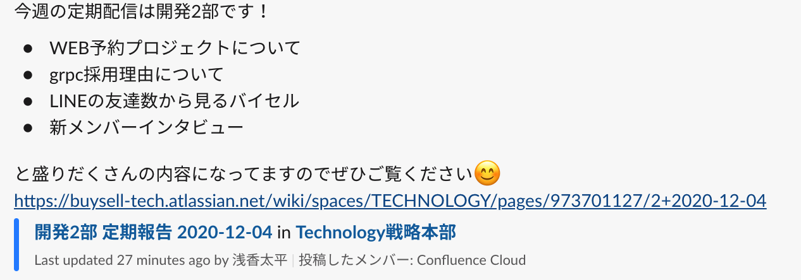
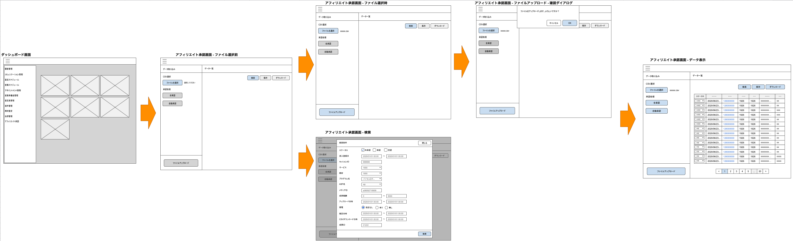
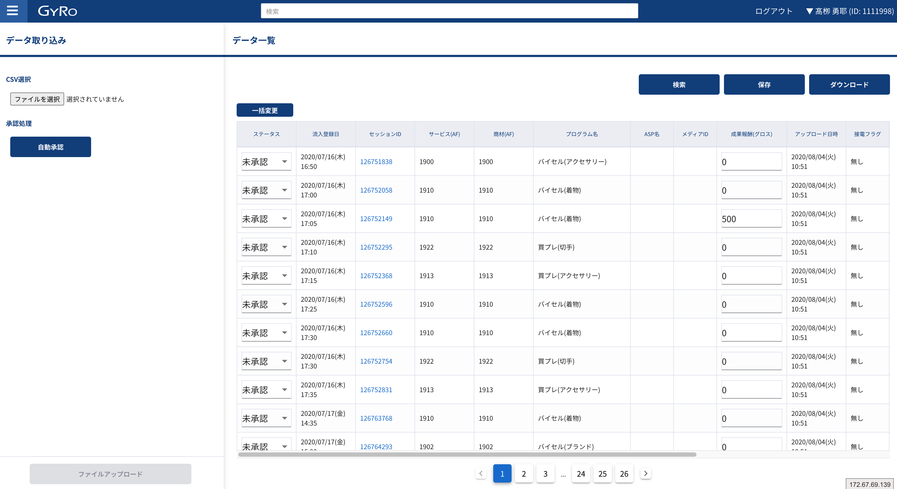
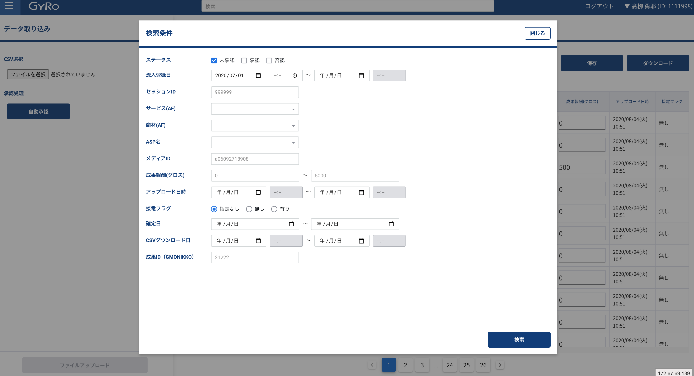

<html>
  <head>
    <link href=’http://fonts.googleapis.com/css?family=Patrick+Hand+SC’ rel=’stylesheet’ type=’text/css’>
    <link rel="stylesheet" href="/node_modules/reveal.js/dist/reveal.css">
    <link rel="stylesheet" href="/node_modules/reveal.js/dist/theme/simple.css">
    <link rel="stylesheet" href="./style.css">
  </head>
  <body>
    <div class="reveal">
      <div class="slides">
        <section data-markdown=""
            data-separator="^\n---$"
            data-separator-vertical="^\n>>>$">
          <script type="text/template">

# Development Leader<br>高柳 勇耶

Dev2 / CS-integration Team <!-- .element: class="sub-title" -->

---

## はじめに軽く自己紹介

---

## 今の自分がやってきたこと・できること

- 要件定義
- 基本・詳細設計
- 開発・検証
  - Vue.js
  - Nuxt.js
  - Typescript
  - Sypress

---

## 目指していること

### フルスタックエンジニア

Rubyはあんまり得意じゃないからVueを通してフロントのスキルをまず磨くつもりだった<br>
思いの外上流工程を任せてもらい、他部署とのつながりをもつ機会ができたことによって要件・設計・ディレクション周りを改めてチャレンジできました。

---

## 携わった案件

---

### ■ WEB予約
### ■ アフィリエイト自動承認・管理機能
### ■ GYRO運用

- 検索時の検索結果スクロール
- ログアウト機能
- E2E（Cypress）テストツール作成
- お店deGYROフロント開発
- 顧客アンケートフロント開発
- オープンリダイレクト対応（wordpress連携機能改善）
- コミュニケーション画面パフォーマンス改善

---

## 仕事の中でこだわってきたこと

---

- ゴールを見極めること。
> ゴールに対してのアプローチ方法をゴールとして捉えがち。あくまで手段であってやり様なんてものはいくらでもある。やるべきことは絶対にブレないように。
- 「できない」はない。
> 難しいなら今できること、他のやり方は何？の思考に即座に切り替えること。
- 確認を徹底すること。
> 「まあ、平気でしょう」は平気じゃない。
- 工数と自分への評価（給料）は直結している。
> 自分の1時間はいくらの価値があるか。スキルの重要性、責任感を常に持つ。
- 人を驚かせたい。
> 「それは思いつかなかった！」というような発想で奇抜に。（結果、見た目も奇抜になってしまったけど）

---

## 代表例①　WEB予約

---

### ■ 画面フロー



---

※詳細は...定期配信でまとめていただきました。


---

- ゴールは？
> WEBでアポ予約を完結させる。その手段としてアポ予約が行える専用「フォーム」の画面をつくる。
- できなかったことは？
> GYROへの都度連携<br>毎回連携してたら負荷やばい、だからやめる。でも複数タブ操作とか離脱時のデータの状態とかどうする？...radisキャッシュつかっちゃえ。
- 確認の徹底はした？
> もちろんクロスブラウザチェックは実機で、結果IE系がボツになってしまった。<br> UT、とデータ連携多すぎるからITを切り分けて実施、からのSTで最終チェック。
- 工数はどうなった？
> リリースまで約1.5ヶ月という短い期間でつくりあげた。
- 驚かせるようなことした？
> MKに静的コンテンツを全部作ってもらった関係でアトミックデザイン辞めました。どうしたら最適にかつ手早くかつメンテしやすくいけるか考え1からデザインパターン(MVCみたいなの)を考えて設計、構築。

---

## 代表例② アフィリエイト自動承認・管理機能

---

### ■ 画面遷移図



---
<!-- .element: class="top-0" -->
### ■ 実際の画面


 <!-- .element: class="af-img-002" -->

---

- ゴールは？
> MK部署の作業工数の削減！そのためにアフィリエイト承認を自動化する機能をつくり直す。
- できなかったことは？
> GYRO上で承認ステータスを管理・編集したい。<br> 自動承認のロジックはsalesforce時代のをベースで整理していけばいいだけだが...<br>もう管理画面を１から作ってしまえということでGYRO上にtable作成。
- 確認の徹底はした？
> 実際、アフィリエイトのデータ(CSV)を開発中とのことで、今回並行開発で巻き戻しを何回も行うことに。<br>都度、データを連携してもらい、修正が入れば1からテストを繰り返す
- 工数はどうなった？
> 仕様変更とはいえ、当初の想定していた工数より2倍近く膨れることに...ここは悩まされたし、反省した点でした。
- 驚かせるようなことした？
> 自動承認機能と、手動更新（GYRO上で承認ステータスを管理・編集）をつくることになったので、機能が盛りだくさんになってしまったため開発も大変...ではなく、<br>もはや保存は保存の機能を切り出して使い回してしまえ。ということでシンプルに実装。

---

## 業務の中での個人的な思い

---

### ■ GYRO

*とにかく『安定』させたい。*

- - -

常に新しいことを取り込んでいるが、その分品質を担保するには？<br>
外部サービス（GitやGCP）に依存しているので<br>
そっちでなにかあったら...<br>
という部分で不安感があった。<br>

→ 今自分ができることはクオリティを更にあげること、運用タスクをただ潰すだけではいけない。

---

### ■ 新規案件

*「ふんわり」したものをいかに固めてモノにするか。*

- - -

やりたいことはなんとなくあるが、それを形にするには？<br>
ネットリテラシーについて、専門の自分たちがしっかりフォローしなければならない。<br>

→ 「プロ」意識。最終的にこちらが主導権を握れるように務める。

---

### ■ 業務環境

*同世代がたくさんいる初めての環境での緊張感。*

- - -

ライバルだらけで仕事がとられそう。ヤバい...という追い込まれた感覚。<br>
自分が今まで経験してきたことをどう活かせるか、差をつけられるか。<br>
- 上流/下流工程
- toCサービス
- FE、BE、デザイン
...etc

自分のもっていないスキルや思考をもっている周りから<br>
さらにそれを盗もう、自分のものにしよう。<br>

→ 逆に刺激になる。楽しい。身近な目標がもてた。<br>

---

## これからの目標・意気込み

---

### 『自分にできないことはない』<!-- .element: class="text-center" -->

- WEBでの顧客獲得を確立したい！
- GYROのフロントをフルリニューアルしたい！

このバイセルでシステムの力を使ってできることはまだまだ沢山あるとおもいます。<br>
「こんなのがあったらいいなあ」を具体的にし、それを可能な限り理想通りになるように<br>
便利なもの作っていき会社の利益につなげ、自分の価値を高めていきたいです。

---

- - -

*常に現状に満足せず、より良いものへ。*

- - -

          </script>
        </section>
      </div>
    </div>
    <script src="/node_modules/reveal.js/dist/reveal.js"></script>
    <script src="/node_modules/reveal.js/plugin/markdown/markdown.js"></script>
    <script>
      Reveal.initialize({
        plugins: [ RevealMarkdown ]
      });
    </script>
  </body>
</html>
